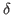
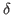
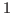
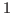

Next: Literature Review Up: Introduction Previous: Introduction
Of course, when the game is repeated in discrete time, the result
change. First, suppose that the Bertrand game is repeated for a known
and finite amount of time,  , and each player has common discount
rate . Now, player's strategies are mappings from histories, ,
(all observations of past actions) to next action. Define the
``finite trigger strategy'' for player as ``play
, and each player has common discount
rate . Now, player's strategies are mappings from histories, ,
(all observations of past actions) to next action. Define the
``finite trigger strategy'' for player as ``play  in every period unless does not play
in every period unless does not play  . In that case, play
forever.'' It can be shown that this is not a (symmetric)
Nash equilibrium strategy. To see why, note that in period
. In that case, play
forever.'' It can be shown that this is not a (symmetric)
Nash equilibrium strategy. To see why, note that in period  ,
player will want to undercut since he does not receive any
future benefit from not undercutting . Knowing this, in period
, would no longer have an incentive not to undercut .
This logic can be extrapolated back to period  and therefore the
only Nash equilibrium is when both players charge .
,
player will want to undercut since he does not receive any
future benefit from not undercutting . Knowing this, in period
, would no longer have an incentive not to undercut .
This logic can be extrapolated back to period  and therefore the
only Nash equilibrium is when both players charge .
Now, suppose the game is repeated infinitely and extend the finite
trigger strategy to an infinite trigger strategy. We will now show
that under a high enough discount rate, the infinite trigger strategy
is a subgame perfect equilibrium. To see why, note that 's total
discounted utility under the trigger strategy (played by both players)
is given by
. Note that if undercuts ,
then his expected utility is given by  since he gets the entire
market share in the first period and then nothing after. Therefore,
has an incentive to undercut in the first period iff
or equivalently
. We
can also show that this is subgame perfect since if
, given one player has deviated, it is weakly
dominant for each player to charge .
since he gets the entire
market share in the first period and then nothing after. Therefore,
has an incentive to undercut in the first period iff
or equivalently
. We
can also show that this is subgame perfect since if
, given one player has deviated, it is weakly
dominant for each player to charge .
justin 2016-05-10